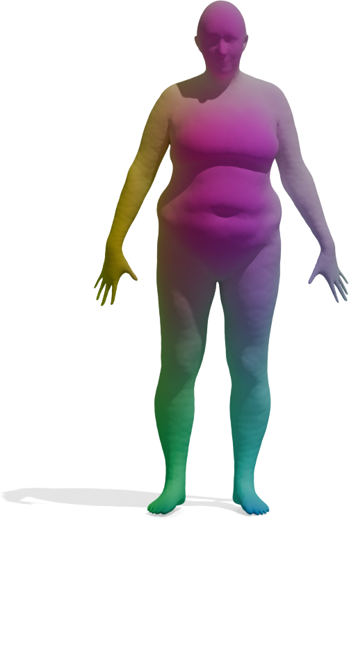

Results
Feature Quality
We visualize the quality of GeoLoRA features by transferring a color-coded signal from a full source shape (left) to our predicted correspondences on a partial target shape (right). Use the arrows to browse all qualitative pairs.


Left-Right Prediction
Articulated shapes are often symmetric, so 2D foundation features alone cannot distinguish left from right. For each shape below, we show the predicted left/right segmentation of frozen DINOv3 (left) and GeoLoRA (right). Frozen DINOv3 frequently collapses both sides into one class; GeoLoRA recovers a clean left/right split.
{% assign chirality_ids = "1_bucksYJL_Swim9001,1_prisoner_Falling125,1_tr_reg_091,1_tr_reg_093" | split: "," %}

Partial-to-Full Matching
GeoLoRA features can be plugged into existing partial-to-full shape matching pipelines. For each pair below, we show the full source shape on the left and the predicted correspondences on the partial target shape for two state-of-the-art methods, DPFM and ULRSSM, each evaluated with either frozen DINOv3 features or our GeoLoRA features. Red circles highlight regions where DINOv3 features lead to noticeable matching errors that GeoLoRA fixes.


Partial-to-Partial Matching
GeoLoRA also improves partial-to-partial shape matching, where both shapes are only partially observed. For each pair below, we show the source partial shape on the left and the predicted correspondences on the target partial shape for two state-of-the-art methods, DPFM and EchoMatch, each evaluated with either frozen DINOv3 features or our GeoLoRA features. Vertices shown in red mark the non-overlapping region (vertices of the target that have no correspondence in the source). Black circles highlight regions where DINOv3 features lead to matching errors that GeoLoRA fixes.


Real-World Scans
We also test GeoLoRA on noisy real-world 3D scans. Each scan (right) is matched against a clean full-shape template (left) using either frozen DINOv3 features or our GeoLoRA features. While DINOv3 features collapse to a single dominant color across most of the scan — indicating poor correspondences — GeoLoRA recovers detailed, semantically meaningful matches.
{% assign rw_scans = "ric3_vis,statue_2_vis,statue_3_vis" | split: "," %}